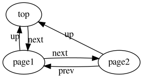

Project 1: Documentation Converter
Last modification on
For these early projects, I want to make some tools that contribute to developing future projects. I look up documentation pretty frequently whenever I'm working, but the quality of that experience varies wildly. Here's my little ranking of those experiences:
| Rank | Type | Example |
|---|---|---|
| Best | Self-Documenting Systems, | Emacs-lisp, other lisps, |
| Texinfo, | Most GNU tools, | |
| Simple Manuals | Man pages | |
| Good | Books | |
| Terrible | Everything else |
I really dislike strictly online documentation. All of the actual information is broken up by useless junk and it usually takes too long to navigate. However, the source itself is useful. It just comes in a variety of markup formats and from a variety of documentation generators. Python projects use ReStructuredText with Sphinx, GNU tools use Texinfo, and there are dozens of others.
Each of these tools can spit out documentation in many formats, but that usually doesn't cover everyone's format preference. Pandoc handles almost every possible need for converting between markup languages, by reading documents from one language into an intermediate representation and then writing that content captured by the intermediate representation to new documents in a different language. This tool will use that design for converting between bodies of documentation.
1 Design
The structure of documentation bodies can be thought of as a directed, labeled graph, where each node contains the markup content and some metadata. The labels describe the kind of connection.

The process of translating from a body of documentation into this intermediate representation will be called analysis. For now, I will assume that a body of documentation is always contained in a directory.
The process of transforming this intermediate representation for different markup formats and node linking constructs will be called conversion.
The process of writing this intermediate representation back to a body of documentation in the real world will be called output.
2 Goals
I feel like this will be a moderately difficult project, but I think the rewards (if properly made) will be great. To mark the finish line for this project, I'll shoot for just converting a small body of HTML documentation to a Texinfo page by March 14th. I'll have to work ahead a little in my classes to get this done, but I think its definitely possible.
I may or may not make some other posts during development. Here's the repository for the project: https://github.com/Tass0sm/graphdoc
Originally, I was generating this website with Haunt, and then I switched to Hugo. Now I'm using Saait. I'm also writing the content in Org Mode.